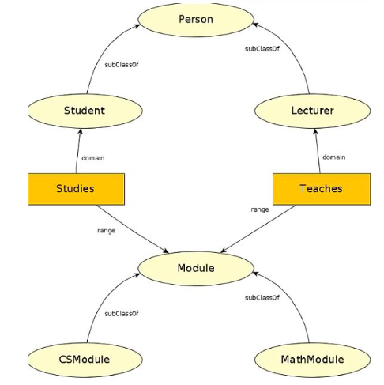
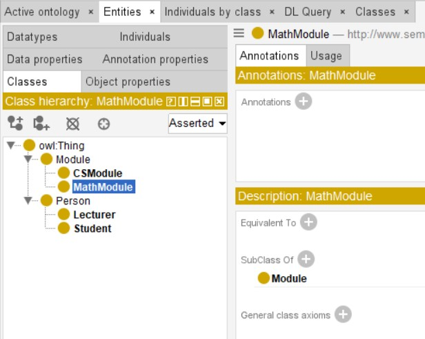
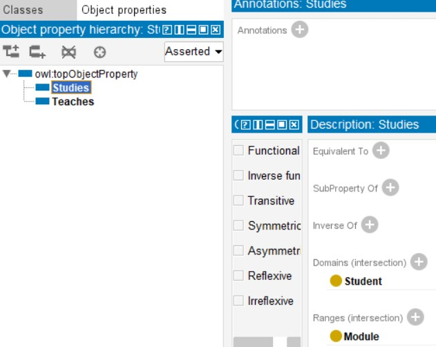

Preparation for Knowledge Representation and Reasoning module
GitHub-hosted version: butterworthc.github.io/KRR/e-Portfolio.html
Online repository, showing commit descriptions: https://github.com/ButterworthC/KRR
On the Module Home page, the scene is set for understanding Knowledge Representation and Reasoning, ontologies and the semantic web. Two sources are cited, as briefly described on the Readings page:
Unit 1 Lecturecast
I had already read the first chapter of our textbook (Wooldridge, 2009) when I saw this, and noticed that it was the source for most of the lecturecast material. However, the lecturecast was a more concise and memorable presentation of the material.
Formative Activity 1
Look at the seven topics described briefly below. Which of them would you consider yourself as ‘knowing’, and which would you consider yourself as having information about?
| Knowing | Having Information About | ||
|---|---|---|---|
| a. | A second language in which you are fluent | X | |
| b. | The content of a television news programme. | X | |
| c. | A close friend. | X | |
| d. | A company’s annual report. | X | |
| e. | Your close friend’s partner whom you have yet to meet. | X | |
| f. | The weather on the other side of the world. | X | |
| g. | The weather where you are now. | X |
Formative Activity 2
What would you suggest is the primary characteristic that distinguishes the ‘having information’ situations from the ‘knowing’ situations you categorised in the previous activity?
The having information situations involve information received second or third hand, without direct sensory input of the subject, whereas the "knowing" situations involve personal experience and contact, i.e. direct sensation.
| P | Q | ¬P | P∧Q | P∨Q | P→Q | P↔Q | P→(¬Q) | (¬P)→(¬Q) | P⊕Q | ¬(P∧Q) | P∨(Q∧R) | P∨(Q∨R) | (P∨Q)∨R | (P→Q)∧(Q→P) |
|---|---|---|---|---|---|---|---|---|---|---|---|---|---|---|
| 0 | 0 | 1 | 0 | 0 | 1 | 1 | 1 | 1 | 0 | 1 | 0 | 0 | 0 | 1 |
| 0 | 1 | 1 | 0 | 1 | 1 | 0 | 0 | 1 | 1 | 1 | 1 | 1 | 1 | 0 |
| 1 | 0 | 0 | 0 | 1 | 0 | 0 | 1 | 1 | 1 | 1 | 1 | 1 | 1 | 0 |
| 1 | 1 | 0 | 1 | 1 | 1 | 1 | 0 | 1 | 0 | 0 | 1 | 1 | 1 | 1 |
Build an ontology in Protégé for this:

Adapted from Sadawi N Lecture Notes
Classes in Protégé:

Properties in Protégé:
